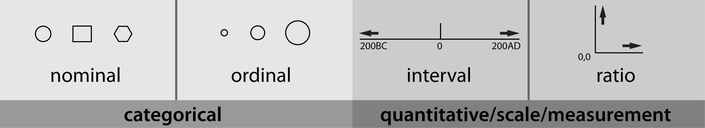

2.16 Poziomy pomiaru
| Typ | Jakościowy | Jakościowy | Ilościowy | Ilościowy |
|---|---|---|---|---|
| Podtyp | Nominalny | Porządkowy | Interwałowy | Ilorazowy |
| Cecha | Wyróżnione kategorie (np. płeć) | Uporządkowane kategorie (np. skala ocen, wskaźnik IQ) | Odległości między kategoriami mają sens (np. kalendarz (daty), temperatura C, F) | Istnieje zero bezwzględne (waga, temperatura K, liczba wypadków samochodowych itp.) |
| Dopuszczalne operacje | \(=, \neq\) | \(>, <\) | \(+, -\) | \(\times, \div\) |
Typ zmiennej wpływa na wybór mierników statystycznych.
Jeśli chodzi o miary tendencji centralnej i miary rozproszenia:
- zmienne nomianalne (można wyzanczyć tylko dominantę);
- zmienne porządkowe (dominanta, mediana, rozstęp międzykwartylowy)
- zmienne ilościowe (dominanta, mediana, rozstęp międzykwartylowy, średnie, odchylenie standardowe)
Zwykle, w przypadku zmiennej porządkowej, która przyjmuje niewiele poziomów (przyjmijmy, że mniej niż 5) stosujemy, jednak, tylko dominantę.
Czasami, np. skale ocen, dla zmiennych porządkowych zwyczajowo używa się też w opisie statystycznym średnich, ale należy mieć świadomość, że takie postępowanie nie jest w pełni zasadne matematycznie.

Levels of measurement